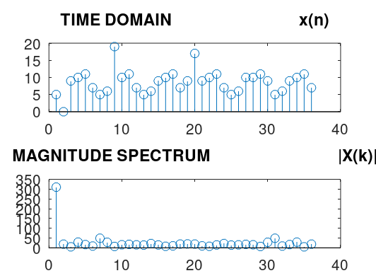

L4_DFT_1
clc,clear,clf
x = [5 0 9 10 11 7 5 6 19 10 11 7 5 6 9 10 11 7 9 17 9 10 11 7 5 6 10 10 11 9 5 6 9 10 11 7 ];
N = length(x);
for n= 0:1:N-1
for k= 0:1:N-1
W(n+1,k+1 )=exp(-j*2*pi*n*k/N);
endfor
endfor
X = W*x'
subplot(2,1,1), stem(x), title('TIME DOMAIN x(n)')
subplot(2,1,2), stem(abs(X)), title('MAGNITUDE SPECTRUM |X(k)|')
X =
310.0000 + 0i
-18.4949 - 4.0319i
-3.1702 - 4.1867i
-24.9545 + 15.2942i
16.6040 + 1.8871i
-6.0634 + 6.8904i
-49.0000 + 3.4641i
-19.5572 + 20.5850i
4.8990 + 5.2248i
5.0000 + 15.0000i
6.9213 - 16.4410i
-5.3573 + 14.4287i
-14.0000 + 1.7321i
11.8522 + 18.4605i
8.2490 - 12.2542i
7.9545 - 0.2942i
-9.5030 + 3.3377i
13.6205 + 13.6947i
20.0000 - 0.0000i
13.6205 - 13.6947i
-9.5030 - 3.3377i
7.9545 + 0.2942i
8.2490 + 12.2542i
11.8522 - 18.4605i
-14.0000 - 1.7321i
-5.3573 - 14.4287i
6.9213 + 16.4410i
5.0000 - 15.0000i
4.8990 - 5.2248i
-19.5572 - 20.5850i
-49.0000 - 3.4641i
-6.0634 - 6.8904i
16.6040 - 1.8871i
-24.9545 - 15.2942i
-3.1702 + 4.1867i
-18.4949 + 4.0319i
